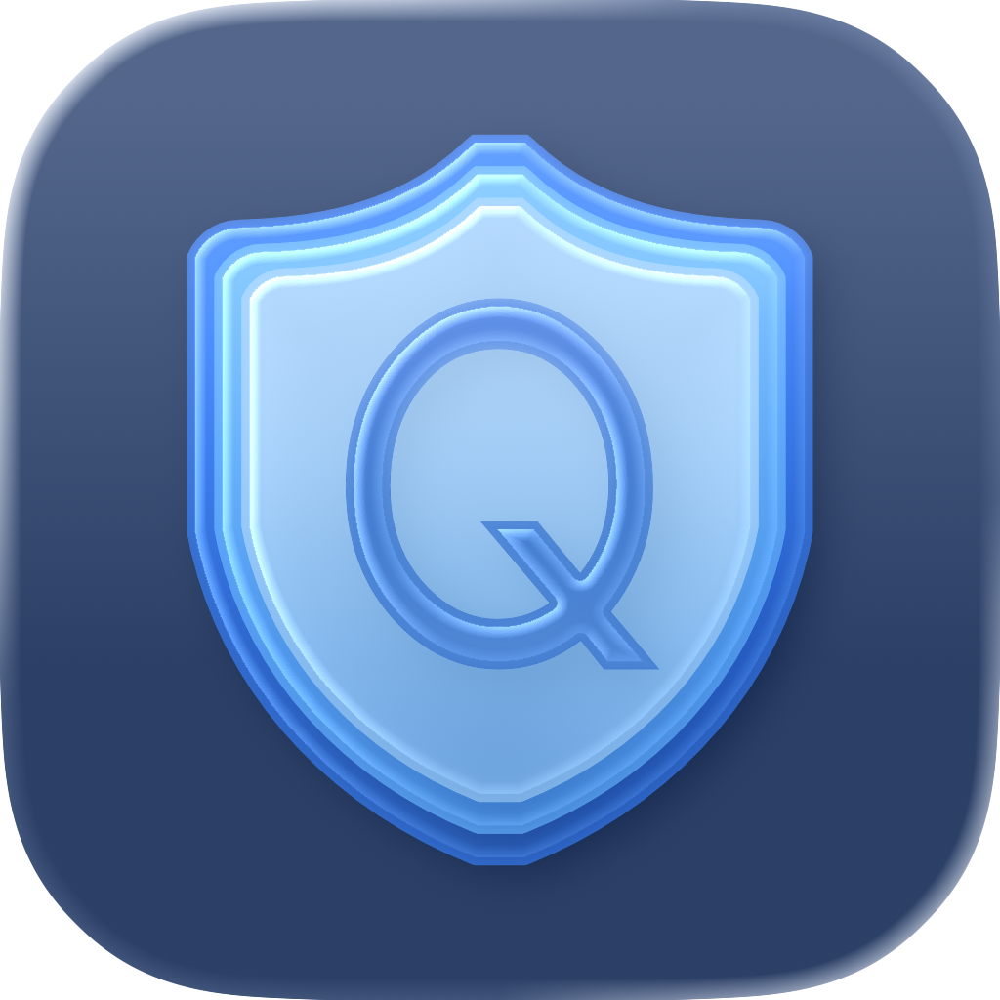

Keep your work
Stop a Safari session, an Xcode build, or a terminal you were tailing from vanishing to one stray keystroke.

QuitBuddyQuitBuddy adds a one-keystroke safety net to Command-Q for the apps where quitting hurts — Xcode, Safari, Figma, your editor, your terminal. Free protects one app forever.
Free protects one app · Standard launch offer $9.99 (until Aug 31) · Works offline · No app telemetry
You meant Command-W to close a tab — and quit the whole app instead. QuitBuddy guards that one moment.
Stop a Safari session, an Xcode build, or a terminal you were tailing from vanishing to one stray keystroke.
Each app decides how Command-Q behaves: Confirm, Hold, Double-press, Allow Normal Cmd-Q, or Never Quit.
Apps you don't add quit exactly like macOS quits them. QuitBuddy only steps in where you asked it to.
QuitBuddy stays quiet until Command-Q needs a second thought.
Your normal shortcut still starts the quit flow.
Per-app rules decide whether to confirm, hold, double-press, or allow.
Accidental quits are stopped, intentional quits still feel fast.
The protection you actually need, without changing normal quitting where you allow it.
Require a quick confirmation before an app closes.
Press and hold ⌘Q for a customizable duration.
Quit only if you tap ⌘Q twice within a short window.
Quit normally for apps that don't need a guard.
Block Command-Q for the apps you don't want closing by accident.
Choose a different mode for each app you care about.
For mouse-heavy workflows: make the red window close button quit the whole app like ⌘Q.
QuitBuddy uses macOS permissions only to detect and manage your configured quit shortcuts.
Launch offer until August 31, 2026. After that, Standard is $12.99.
Free forever
Protect one app from accidental Command-Q. Forever.
Upgrade to Standard when you want unlimited per-app rules.
Download FreeLaunch offer · ends Aug 31, 2026
Lifetime Standard. Unlimited per-app rules. One-time purchase, no subscription.
Regular price is $12.99 after the launch offer ends. Pay once, no account.
Buy StandardQuitBuddy adds one keystroke of friction between Command-Q and losing your flow — only for the apps where the difference matters. Everything else quits exactly the way macOS quits it.
“I kept hitting Command-Q when I meant Command-W — and losing Safari sessions, Xcode debug state, and Slack threads at the worst possible times. I wanted a small, native way to protect just the apps where quitting actually costs me. So I built it.” — the QuitBuddy developer
Native macOS app $12.99 once — no subscription No account, no sign-up No telemetry, works offline Replies from the developer
If you've ever accidentally quit an important Mac app, this is for you.
In Xcode, VS Code, Cursor, or a tail-following terminal. Hold-to-quit keeps a long compile or a live log from disappearing.
In Figma, Sketch, Affinity, or Photoshop. Confirm-to-quit catches the slip every time.
In Scrivener, Ulysses, Notion, Obsidian, or a browser with twelve open tabs. They stay open until you mean to close them.
In Final Cut, Logic, DaVinci, or Ableton. Long sessions deserve a guard.
Which is most of us. Pick the one app where the slip hurts most. Free protects it forever.
Turn the red window close button into a full app quit, so clicking close behaves like pressing ⌘Q in standard Mac windows.
Common questions about how QuitBuddy works and how it's sold.
No. Checkout and license activation happen online; after that QuitBuddy works fully offline. Your settings live on your Mac in a plain JSON file you can read.
Yes — within the activation limit on your license. You can deactivate a Mac from inside the app to free up an activation, then activate the new Mac with the same key.
Deactivate the old one from inside the app (License → Deactivate This Mac), then activate the new one with the same license key. No support ticket needed.
System remaps are global and blunt. QuitBuddy lets each app behave differently — Hold for Xcode, Confirm for Safari, Allow Normal for Notes — without any keyboard remapping at all.
Yes. Standard includes a global setting called Quit app when closing its window. When enabled, clicking a standard Mac window's red close button quits the owning app like ⌘Q, with no extra QuitBuddy prompt. Apps with custom, borderless, relocated, or full-screen window controls may behave differently.
Nothing. No analytics, no telemetry, no keystroke history. Input Monitoring is only used to detect configured quit actions: Command-Q and, if you enable it, red close-button quit clicks. The privacy policy spells this out.
Email quitbuddy.support@gmail.com within 14 days of purchase. Refunds are handled directly through Lemon Squeezy.
No. The per-app keyboard-shortcut model the app uses isn't compatible with App Review, so the only public way to get QuitBuddy is the direct download from this site. Updates are delivered automatically through the app's built-in updater.